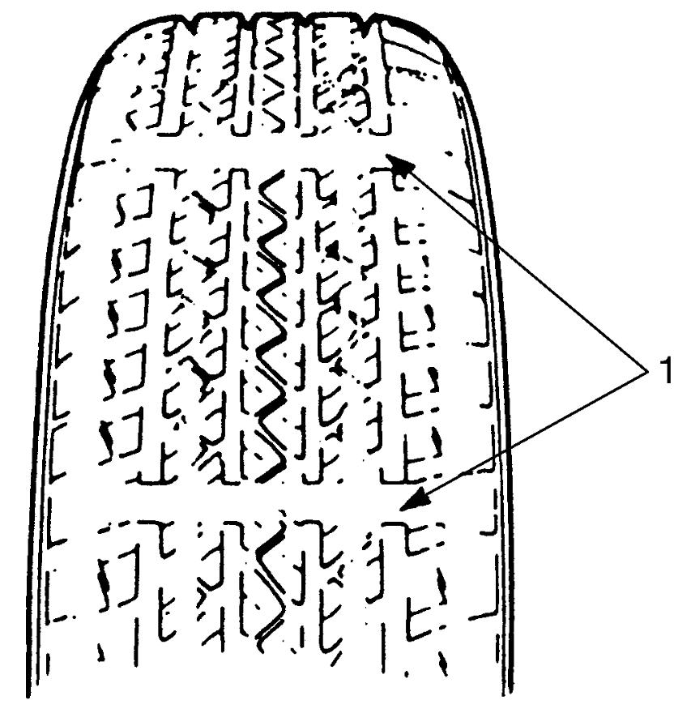

0B
| Tire Inspection |
1)Check tires for uneven or excessive wear, or damage. If faulty condition is found, replace tire.
Refer to Tire Inspection for details.

Refer to Tire Inspection for details.

 "Expand image")
| 1. | Wear indicator |
2)Check inflation pressure of each tire and adjust pressure to specification if necessary.
NOTE:
•Tire inflation pressure should be checked when tires are cool.
•The tire inflation pressure will change due to changes in atmospheric pressure, temperature or tire temperature when driving. To reduce the chance of false illumination of the low tire pressure warning light due to normal changes in temperature and atmospheric pressure, check and adjust the tire pressure referring to Tire Description.
•Specified tire inflation pressure is indicated on the “Tire Placard”.
•The tire inflation pressure will change due to changes in atmospheric pressure, temperature or tire temperature when driving. To reduce the chance of false illumination of the low tire pressure warning light due to normal changes in temperature and atmospheric pressure, check and adjust the tire pressure referring to Tire Description.
•Specified tire inflation pressure is indicated on the “Tire Placard”.
3)Rotate tires. For details, refer to Tire Rotation.